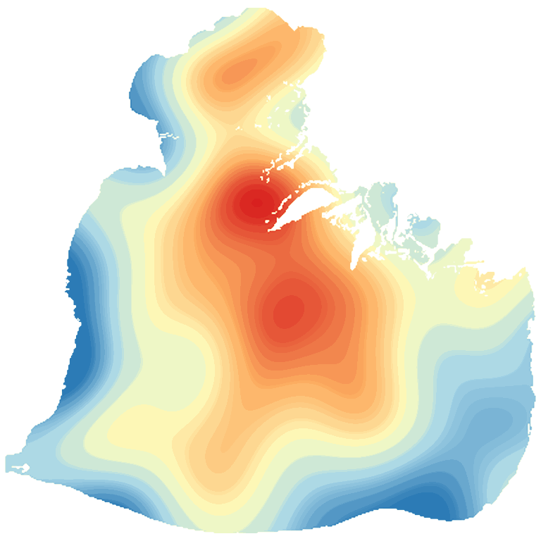

LakeScope › MI
Lake St. Clair today
Updated 2026-11-21 - Atlas Labs
47°F water, level steady, near normal, calm this morning.
Water level
574.17 ft
NOAA water-level station St Clair Shores - 2026-11-21
7-day trend: steady (-0.04 ft). Compared with normal for this date: -0.9 ft (same weeks, 2016-2025).
Water clarity and algae
No fresh view yet Clouds have hidden the lake lately.
Surface temperature
47°F
seen from space on 2026-11-19

Ice
Open - 0% ice cover
Estimate from weather and satellite, not a measurement. Check the ice yourself before going on it.
Weather, next 3 days
| Day | Sky | High / low | Wind | Rain |
|---|---|---|---|---|
| Saturday | Sunny | 64 / 42°F | 8 mph S | 0% |
| Sunday | Mostly Sunny | 62 / 38°F | 9 mph SSW | 0% |
| Monday | Mostly Sunny | 46 / 28°F | 10 mph NW | 3% |
Sunrise 07:29 - sunset 17:03 - Waxing gibbous. National Weather Service.
Get the LakeScope app: alerts and the 3-D view of Lake St. Clair